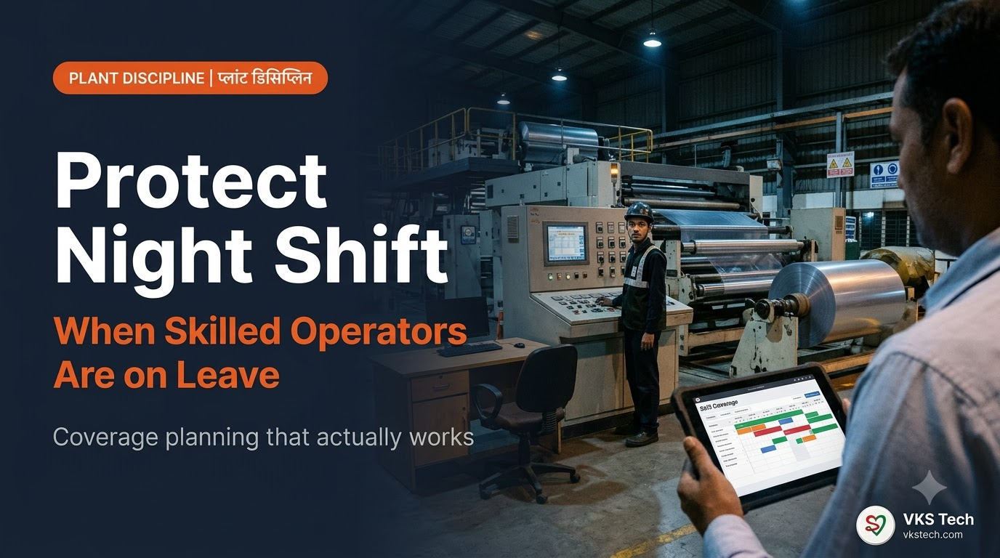
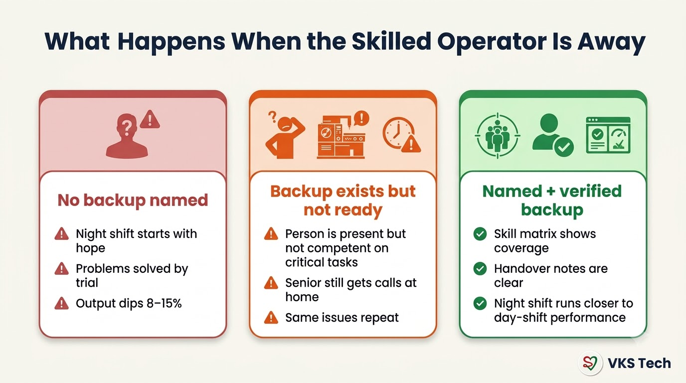
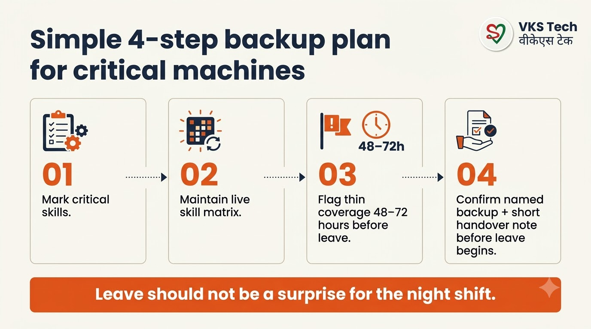
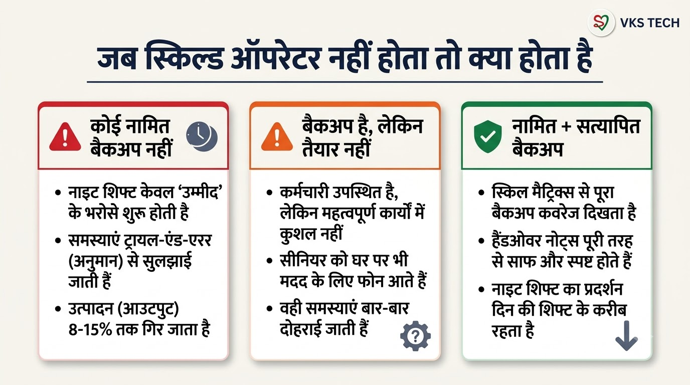
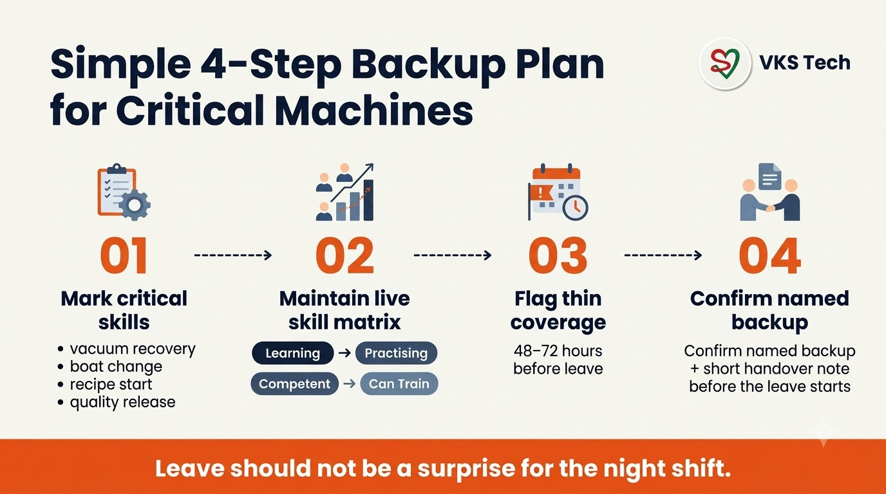

🌙 Protect Night Shift Output When Skilled Operators Are on Leave
📖 10-min read | Plant Discipline Guide | For production managers and shift in-charges
In most Indian flexible packaging plants the night shift is where problems become expensive. The skilled operator who “knows the machine” is on leave or weekly off. The backup is present but not ready. By morning the numbers show it — slower startup, more stops, higher waste, and sometimes a quality complaint.
This is not bad luck. It is missing coverage planning. The fix is simple and does not require new machinery.
What Actually Breaks on Night Shift
- Vacuum recovery or boat-related issues that only one or two people handle confidently
- Recipe / job change that needs experience to get right the first time
- Quality edge cases that the day team “just knows”
- Small stops that turn into long stops because the person who usually fixes them is away
Plants that track this carefully often see an 8–15% output gap between a well-covered night and a thin-covered night on the same machine.

The Simple 4-Step Backup Plan

- Mark critical skills
Not every task is critical. List the 5–8 skills that, if missing, hurt output or quality the same night (examples: vacuum recovery, boat change discipline, first-job startup, quality release for a key structure). - Keep a live skill matrix
Rows = people, columns = skills, status = Learning → Practising → Competent → Can Train. This is exactly what Man Power is built for. Coverage % on critical skills becomes visible instead of tribal knowledge. - Flag thin coverage early
When someone with Competent / Can Train status applies for leave (or is already on the roster as off), the system or the supervisor should see: “After this leave, only one Competent person remains on vacuum recovery.” Act 48–72 hours before the leave starts. - Confirm named backup + short handover
Before the skilled person goes on leave, a named backup is confirmed and a short written (or photo) handover note exists. Night shift then starts with information, not hope.
If a critical skill has only one Competent / Can Train person, that person should not go on leave without a temporary backup plan — even if the backup is only “Practising” with a clear escalation path to the day supervisor.
How Man Power, Mentor and PackLink Fit
- Man Power — Roster + leave + skill matrix + coverage view. The plant stops discovering thin coverage at 10 pm.
- Mentor App — When the backup is present but not yet confident, use short focused coaching or free modules instead of hoping they “pick it up” on a difficult night.
- PackLink — Only when the gap is structural (you truly do not have enough competent people) and internal training will take too long.
30-Day Adoption Path
Week 1 — List critical skills for one metalliser or one converting line. Put them into the skill matrix.
Week 2 — Fill current status for the people who actually run that line. Be honest (Practising is not Competent).
Week 3 — Link leave and roster so thin coverage is visible at least 48 hours ahead. Start naming backups before leave is approved.
Week 4 — Review two night shifts: one with proper backup, one without. Compare startup time, stops, and waste. Use the difference to convince the rest of the plant.
Key Takeaway
🌙 जब स्किल्ड ऑपरेटर छुट्टी पर हों तो नाइट शिफ्ट आउटपुट की रक्षा कैसे करें
📖 11-min read | प्लांट डिसिप्लिन गाइड | प्रोडक्शन मैनेजर और शिफ्ट इंचार्ज के लिए
ज्यादातर भारतीय फ्लेक्सिबल पैकेजिंग प्लांट्स में नाइट शिफ्ट वह जगह है जहाँ समस्याएँ महंगी हो जाती हैं। जो स्किल्ड ऑपरेटर “मशीन को जानता है” वह छुट्टी या वीकली ऑफ पर है। बैकअप मौजूद है लेकिन तैयार नहीं। सुबह नंबर बता देते हैं — धीमा स्टार्टअप, ज्यादा स्टॉप्स, ऊँचा वेस्ट, कभी-कभी क्वालिटी शिकायत।
यह बदकिस्मती नहीं है। यह कवरेज प्लानिंग की कमी है। समाधान सरल है और नई मशीन की जरूरत नहीं।
नाइट शिफ्ट पर वास्तव में क्या टूटता है
- वैक्यूम रिकवरी या बोट संबंधी समस्याएँ जिन्हें सिर्फ एक-दो लोग आत्मविश्वास से संभालते हैं
- रेसिपी / जॉब चेंज जिसमें पहली बार सही करने के लिए अनुभव चाहिए
- क्वालिटी के ऐसे केस जिन्हें दिन की टीम “बस जानती है”
- छोटे स्टॉप्स जो लंबे हो जाते हैं क्योंकि आमतौर पर ठीक करने वाला व्यक्ति दूर है

सरल 4-स्टेप बैकअप प्लान

- क्रिटिकल स्किल्स मार्क करें
हर काम क्रिटिकल नहीं होता। 5–8 ऐसे स्किल्स चुनें जिनके न होने पर उसी रात आउटपुट या क्वालिटी प्रभावित होती है। - लाइव स्किल मैट्रिक्स रखें
पंक्ति = लोग, कॉलम = स्किल्स, स्टेटस = Learning → Practising → Competent → Can Train। Man Power इसी के लिए बना है। - पतली कवरेज जल्दी फ्लैग करें
जब Competent / Can Train वाला व्यक्ति छुट्टी माँगे, तो 48–72 घंटे पहले दिखना चाहिए कि कवरेज पतली हो जाएगी। - नामित बैकअप + छोटा हैंडओवर कन्फर्म करें
छुट्टी शुरू होने से पहले नामित बैकअप तय हो और छोटा लिखा या फोटो हैंडओवर नोट मौजूद हो।
अगर किसी क्रिटिकल स्किल पर सिर्फ एक Competent / Can Train व्यक्ति है, तो बिना अस्थायी बैकअप प्लान के वह छुट्टी पर नहीं जाना चाहिए।
Man Power, Mentor और PackLink कैसे मदद करते हैं
- Man Power — रोस्टर + लीव + स्किल मैट्रिक्स + कवरेज व्यू।
- Mentor App — जब बैकअप मौजूद है लेकिन आत्मविश्वास कम है, तो छोटी फोकस्ड कोचिंग।
- PackLink — जब कमी संरचनात्मक हो और आंतरिक ट्रेनिंग बहुत लंबी पड़े।